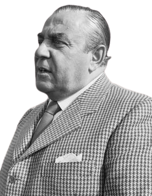

Karl Alberto Abarth
(15 de noviembre de 1908 - 24 de octubre de 1979) fue un disenador de
automoviles, nacido austriaco, pero nacionalizado posteriormente
italiano. Al hacer el cambio, hizo lo propio con su nombre,
transformandolo a Carlo.
Fundo Abarth & C. junto a Armando Scagliarini (Padre del piloto de
Cisitalia Guido Scagliarini) en Turin (31 de marzo de 1949), usando su
signo del zodíaco, el Escorpio, como logotipo corporativo.
Fallecio el 24 de octubre de 1979 Viena (Austria).

EL ORIGEN
La empresa Abarth, fue fundada el 15 de abril de 1949 por Carlo Abarth,
austríaco nacionalizado italiano, y Armando Scagliarini hasta que en
1971 fue absorbida por Fiat. La empresa Abarth, dedicada a la
competición, empieza corriendo vehículos Cisitalia 1100 más tarde y
paralelamente a la actividad deportiva, comienzan a desarrollar la que
sería la actividad principal de la empresa: la fabricación de caños de
escape especiales, que serían conocidos en el mundo entero a través de
su propia marca de autos, y usada en serie por otros fabricantes como
Ferrari, Fiat y Ford.
En 1970 apareció el último 600 Abarth capaz de llegar a los 210 Kph con
112 caballos. Con carburadores dobles, pistones y bielas especiales y
trabajo aerodinámico en la parte trasera era un verdadero prototipo para
las pistas. Desde 1949 hasta 1971 la empresa construyó 3,5 millones de
escapes para 345 tipos de autos diferentes. La otra actividad de la
marca fue la fabricación de automóviles con prestaciones deportivas,
valiéndose de los mejores carroceros de la época, como Zagato, Allemano,
Vignale, Bertone, etc.
Sus modelos más exitosos estuvieron basados en plataformas de Fiat 600 y
se convirtieron en el coche de moda en una época en la que lo deportivo
era sinónimo de motores de 12 cilindros y de velocidades mayores a los
200 km/h.
El modelo Nurburgring tenía dos radiadores en el accesorio frontal y con
los años llegó a registrar 180 Kph en ese circuito como velocidad
promedio en rectas. Con sus preparaciones del 600, Abarth llegó a
sorprender al mundo entero convirtiéndose en marca campeona del mundo
varios años consecutivos, alcanzando records absolutos de velocidad
(algunos aun imbatibles para esas cilindradas) y obteniendo en el año
1965, 1000 victorias en el campeonato europeo de turismos. Algunos de
sus modelos fueron conocidos en nuestro país a través de Piero Dusio,
que los importó en 1961 colocándoles la marca Cisitalia y haciéndolos
pasar por ensamblados en el país.